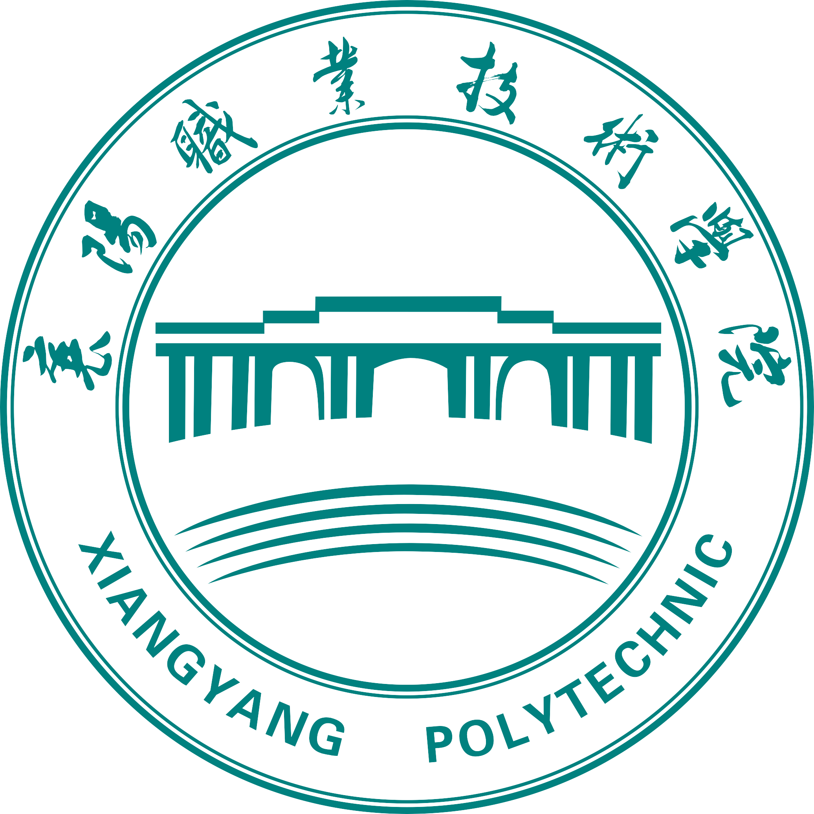

🗂️ 技术文章
一位大数据工程师的"非常规"公益实践：从发现香港警务处官网漏洞说起
2025年5月1日
2025年2月12日，我在参与开源社区项目时，偶然注意到香港警务处官网（https://www.police.gov.hk/ppp_sc/index.html）的公众服务板块中，罪案统计数据可视化模块存在跨站脚本（XSS）漏洞。具体表现为：当用户在搜索栏输入特殊字符时，页面会返回未过滤的服务器响应内容。
QwQ-32B为襄阳职业技术学院拥抱强化学习的AI力量
2025年3月11日
信息技术学院大数据专业学生团队与UNHub平台合作，利用QwQ-32B模型开启AI教育新范式。通过强化学习驱动，构建职业教育智能化实践平台，支持从算法开发到应用的全链路教学。

为襄阳职业技术学院最新推出的DeepSeek-R1-fix-XYTC:0908、DeepSeek-R1-fix-XYTC、Qwen-MAX-XYTC及DeepSeek-R1-XYTC多模态模型家族
2025年3月7日
本文档详细介绍了张永豪与联合库UNHub为襄阳职业技术学院开发的四款核心NLP模型架构，包括DeepSeek-R1-fix-XYTC:0908、DeepSeek-R1-fix-XYTC、Qwen-MAX-XYTC及DeepSeek-R1-XYTC。
襄阳职业技术学院专属版DeepSeek等大模型 开启智慧新纪元
2025年3月7日
作为一名襄阳职业技术学院信息技术学院大数据技术专业的学生，我基于国产大模型DeepSeek和Qwen-MAX，打造了专属学校的定制化智能助手。